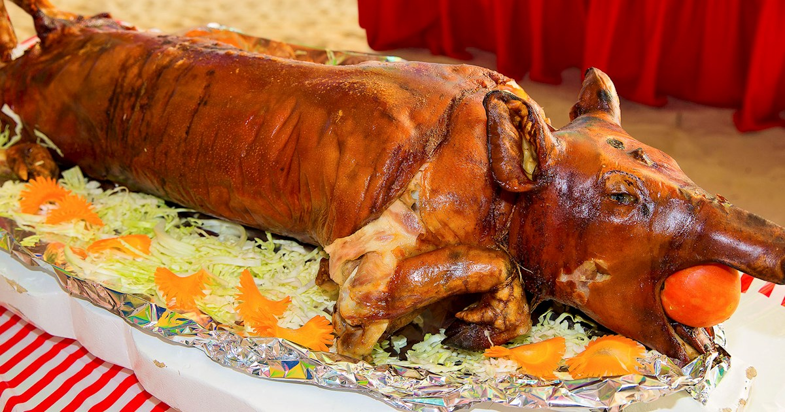

|
|
Lechon Cebu

Famous roasted pig with crispy skin. Lechon is a whole pig, slow-roasted over charcoal. It is turned on a spit for several hours. The skin turns deep golden and strikingly crisp. The meat inside stays tender and aromatic. Herbs and spices are packed into the cavity.
In the Philippines, this dish appears at nearly every major celebration, from birthdays and christenings to weddings, reunions, and fiestas.
Archaeological evidence shows Filipinos consumed pork at least 7,000 years ago. Roasting whole pigs over open flame predates Spanish colonial rule. This practice is known in some regions as inasal.
INGRIDIENTS
1. 1 whole native pig (live weight 18 – 20 kilos)
2. salt and black pepper to taste
3. soy sauce
For the glaze:
1. 1 liter of Pepsi
2. **or if you want to achieve a red color lechon skin: 3 part of evaporated milk + 1 part of water
For the stuffing:
1. 10 bundles lemon grass (tanglad)
2. 1/4 cup star anise
3. 6 pieces of laurel or bay leaves (cut into small parts)
4. 5 cups of crushed garlic
5. 2 kilos green onion leaves
6. 8 pieces of halved saba bananas, half-cooked through boiling (optional)
Materials Needed:
1. Medium Bamboo
2. Needles and thread for stitching
3. Clean sponge
INGRIDIENTS
1. Lechon Preparation: Cleaning: Remove hair follicles from the pig’s skin and the innards. Rinse the pig and clean the inside, wash and scrub the lumps of blood inside the stomach until thoroughly clean. Pour hot water inside the pig and partly slice the rib part.
2. Pat it dry and rub the pig with salt and pepper from inside and out. Brush the inside belly with enough or little soy sauce.
3. Once done, stuff the belly with saba bananas (plantain), anise, green onion leaves, crushed garlic and laurel leaves. Stack it with a bundle of lemon grass in the stomach center. Lock it by stitching the belly. Stitch it well so that ingredients will not spill out when you start to roast it.
4. Prepare a mid size bamboo and skewer the pig and split roast over hot charcoal. Do not put the charcoal directly underneath the belly of the pig but over both sides, slowly churning the pig roast.
5. Constantly glaze pig while it slowly roast with milk or pepsi using a sponge. This will make the skin extra crispy.
6. Roast for a 3 to 4 hours until the meat is tender. Do not overcooked.
7. The spices and the lemongrass is what really make Cebu lechon so flavourful, aromatic with rich succulent taste.
|